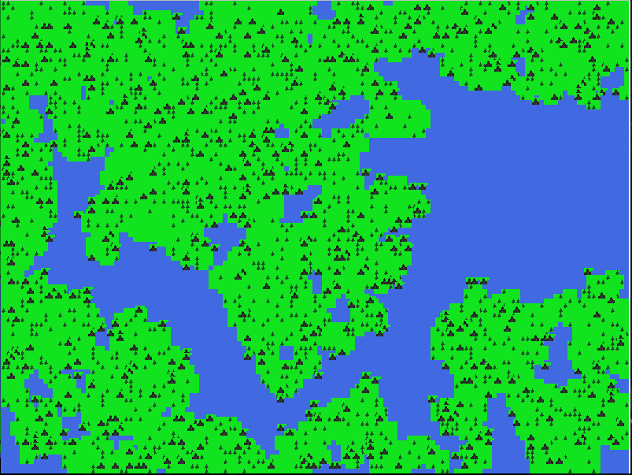

I have been thoroughly enjoying programming lately, it strikes such an interesting balance between creativity and science. It is a great reflection of this world. That's probably why my favorite thing to program recently is this world, or rather simulations of this world. And thus begins my next project. Maps!
Overview
I made this map generator with pygame, it currently has land, water, tree and mountain tiles that are dynamically generated based on user supplies settings. You can tailor the amount of tree, water and mountain tiles in the options menu.
Settings Management
I created this SettingsManager class to handle loading and saving the setting. The settings get saved to a file called setting.json so they remain persistent.
Algorithms
The major roadblock i ran into was making things look realistic, there is much chaos in nature, but there is also so much structure and rules. Chaos and randomness, yet structure and rules reminds me of Conway's Game of Life. So i decided to try and implement a cellular automata algorithm to have the mountains and trees for in more "natural" patterns.
Use cases
Education:The map generator serves as an educational tool for learning about procedural generation, terrain modeling, and graphical representation of landscapes.
SimulationsI plan in integrating maps into my life.py simulation, check out my other article here: Simulating Life with Python
World Building/Games:Can be used to create fantasy maps for creative writing or rpg games.
Conclusion
This has been a fun project, that has increased my programming skills as well as my knowledge geography and earth science. I encourage you to play around with the application. Make some maps, change the settings and play around with the code, have fun! I do have some features in mind that i'm planing on adding, but first i have some optimizing to do. Next will be rivers!
Code: Map GeneratorHere are some example maps the application has made: